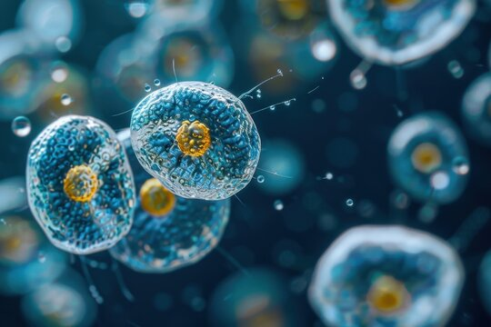

A Comprehensive Guide to Understanding Cryptosporidium
Cryptosporidium,an disease that has affected a whole list of hosts,in areas of high densities of both livestock and wildlife, such as the UAE, these diseases manifest themselves most markedly. This parasite is known to cause a very wide sympyoms of diarrhea, dehydration, malabsorption, and other gastrointestinal problems that create health and economic burdens for humans and animals. There have been several investigations in different parts of the world regarding Cryptosporidium infections in a number of animals, especially those usually found nearer to human populations or bred for agricultural purposes. The zoonotic potential of Cryptosporidium marks a consideration for animal health. as it infects humans and may get access through contaminated water sources. direct contact with Infected animals, or consumption of undercooked meats. Also. the parasite is able to survive in environments, including water and on , for an extended period, subsequently posing challenges towards its control.
Cryptosporidium, which is a protozoan parasite, is a primary route that infects the gastrointestinal tract of artiodactyls (hoofed mammals such as cattle, sheep, goats, and deer). It belongs to the phylum Artiodactyl and is notable for its unique life cycle, which occurs entirely within the host. Cryptosporidium is a tiny parasite with a tough shape that enables it to continue to exist and infect hosts. It has two main forms: the oocyst and the sporozoite. The oocyst is the infectious form, shaped like a small sphere or oval, approximately 4–6 microns and protected by a sturdy outer wall that makes it proof against harsh environments, while the internal lipid wealthy layer gives additional protection. Inside the oocyst are four sporozoites, which are small, curved cells that infect the host’s intestines. These sporozoites use special tools to connect to and invade the cells lining the intestines. In addition, each sporozoite has a single centrally positioned nucleus and confined mitochondrial systems, reflecting its reliance on host-derived energy sources. Also, once inside, the parasite creates a secure area to hide and take nutrients from the host, hiding detection by the immune system. biology
The parasite's lifecycle begins when contaminated food or water is ingested. The oocyst breaks in the gastrointestinal tract, releasing sporozoites that invade the small intestine. Inside the host cells, the parasite undergoes asexual and sexual reproduction, forming new oocysts to be excreted and continue the cycle.
Cryptosporidium, which is a protozoan parasite, is a primary route that infects the gastrointestinal tract of artiodactyls (hoofed mammals such as cattle, sheep, goats, and deer). It belongs to the phylum Artiodactyl and is notable for its unique life cycle, which occurs entirely within the host. Cryptosporidium is a tiny parasite with a tough shape that enables it to continue to exist and infect hosts. It has two main forms: the oocyst and the sporozoite. The oocyst is the infectious form, shaped like a small sphere or oval, approximately 4–6 microns and protected by a sturdy outer wall that makes it proof against harsh environments, while the internal lipid wealthy layer gives additional protection. Inside the oocyst are four sporozoites, which are small, curved cells that infect the host’s intestines. These sporozoites use special tools to connect to and invade the cells lining the intestines. In addition, each sporozoite has a single centrally positioned nucleus and confined mitochondrial systems, reflecting its reliance on host-derived energy sources. Also, once inside, the parasite creates a secure area to hide and take nutrients from the host, hiding detection by the immune system.
Investigations worldwide highlight the need for continued research and collaboration to mitigate the impact of Cryptosporidium infections.